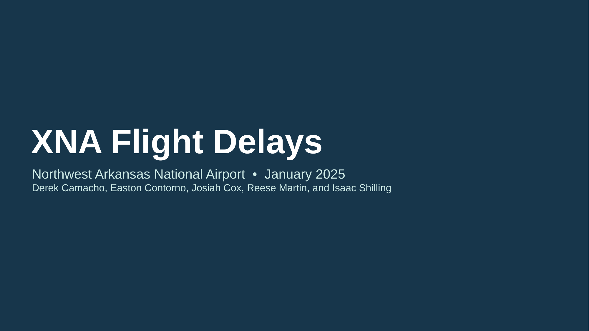
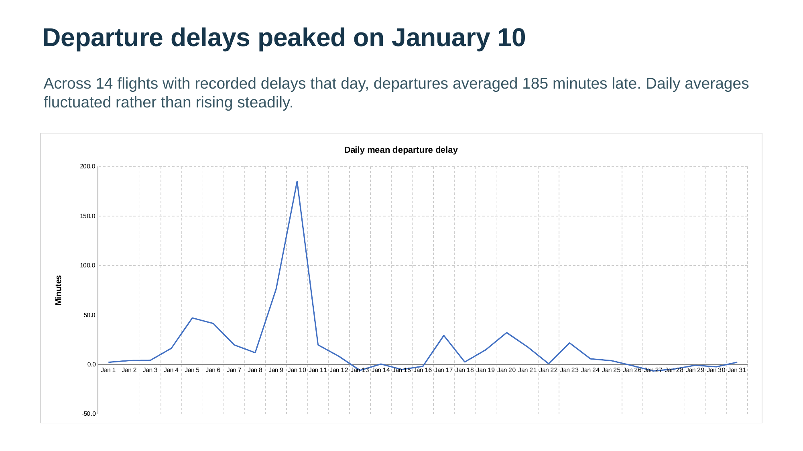
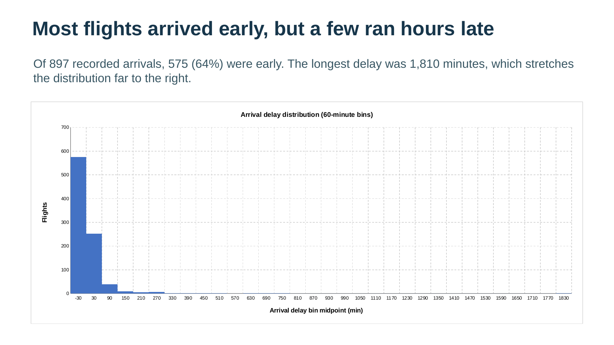

Group members: Reese Martin, Derek Camacho, Isaac Shilling, Josiah Cox, and Easton Contorno

The Data Set
For this project we used the Reporting Carrier On-Time Performance data published by the U.S. Department of Transportation’s Bureau of Transportation Statistics. We pulled every flight that departed from Northwest Arkansas National Airport (XNA) in January 2025, which came out to 933 flights. Each row in the data set represents a single flight, and we kept columns for the flight date, operating carrier code, departure delay, arrival delay, cancellation status, flight distance, and actual air time.
After pasting the raw data into Excel, we renamed the columns using descriptions from the original source and used AI to help clean the data into our Flight Data sheet. Since canceled flights don’t have delay or air time values, we excluded them from those calculations instead of counting them as zeros. All of our summary tables and charts live on a separate Plots sheet, with one column of work for each of our four questions.
Question 1: How did departure delays at XNA change over the month of January 2025?
Why it’s interesting: XNA is the nearest major airport to Fayetteville, so it’s the one most students rely on to get home over breaks. January also tends to bring winter weather to the area, so we wanted to find out whether delays grew gradually throughout the month or were concentrated in sharp spikes on just a few days.
How we used Excel: Working from the flight date and departure delay columns, we grouped the 898 recorded departure delays on the Plots sheet by date and calculated an average delay for each day of the month. Some of the values were negative, meaning those flights actually left early, so we kept that in mind when reading the results. The daily averages made one day stand out: on January 10, 14 flights departed an average of 185 minutes late.

How we developed the visual: Since this question is about how something changes over time, we chose a line chart with the date on the horizontal axis and the average daily delay in minutes on the vertical axis. We used a single line color, labeled both axes with their units, and made sure zero stayed visible on the axis so days with early departures fall clearly below it.
Question 3: How are arrival delays for flights leaving XNA distributed?
Why it’s interesting: An average doesn’t always reflect what a typical trip is like, so we wanted to see whether most flights out of XNA actually arrive on time and how often a flight ends up extremely late. This matters a lot for anyone with a connection to catch or a ride waiting at the destination.
How we used Excel: We sorted the recorded arrival delays into 60-minute bins and counted how many flights landed in each one. Flights without arrival delay data were left out, and we kept the largest delays in so the chart would show the full range. Of the 897 recorded arrivals, 575 arrived early, while the longest delay reached a staggering 1,810 minutes.

How we developed the visual: A histogram is the best way to show the distribution of a single numerical variable, which is something we picked up in our statistics class. We removed the gaps between the bars so the bins touch, labeled each bin by its midpoint, and labeled the vertical axis as the number of flights. The main takeaway is the long right tail: most flights arrived early, but a handful ran many hours behind.